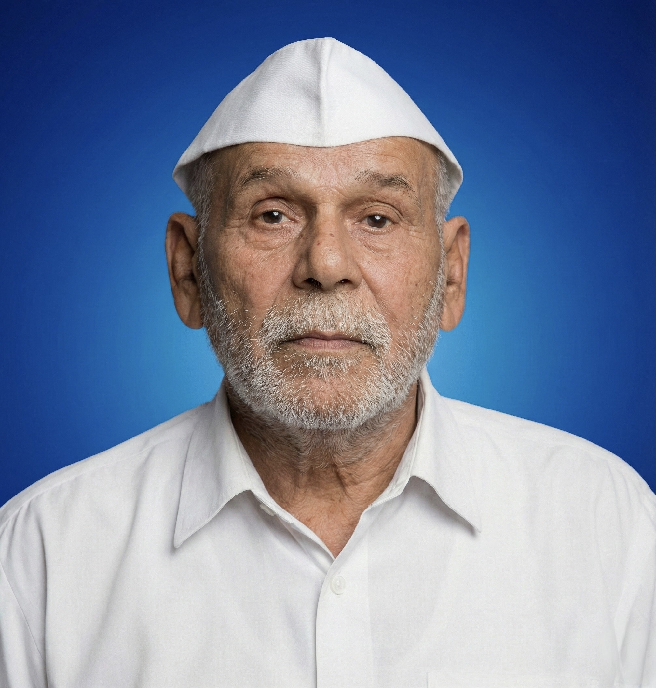

पांडुरंग महाराज
श्री. पांडुरंग महाराज
| ✽ | नाव- | श्री. पांडुरंग महादू पाटील. |
| ✽ | जन्म- | 01-04-1939 , नगांव, धुळे |
| ✽ | स्वर्गवास- | 03-02-2019 ( 80 वर्षे ) |
| ✽ | समाधी- | श्री गुरुदत्त मंदिर नगांव, ता. जि. धुळे. |

✽ अधिक माहिती ✽
जीवन प्रवास
श्री पांडुरंग महादू पाटील उर्फ ” पांडु महाराज ” यांचा जन्म दिनांक 01 एप्रिल 1939 रोजी धुळे जिल्ह्यातील नगांव गावातील भदाणे परिवारात झाला. परिस्थिती अत्यंत गरीब असल्यामुळे त्यांनी लहानपणापासूनच शेतमजुरीचे काम सुरू केले. अत्यंत कठोर परिश्रम आणि समर्पणामुळे त्यांनी आपल्या जीवनातील प्रारंभिक संघर्षांचा सामना केला.लहानपणीच त्यांना आध्यात्मिकतेची ओढ होती. त्यांनी आपल्या घराच्या आणि परिसराच्या धार्मिक वातावरणातून प्रेरणा घेतली. महाराजांनी आपल्या कुटुंबासोबतच गावातील लोकांच्या मदतीने शेतमजुरीचे काम केले. गरीब परिस्थिती असूनही त्यांनी आपल्या धर्मावर दृढ श्रद्धा ठेवली आणि सतत साधना केली.
आध्यात्मिक प्रवास
एका दिवशी महाराज शेतात काम करत असताना त्यांना गुरु गोरक्षनाथ (नवनाथांपैकी एक नाथ)
यांचे साक्षात दर्शन झाले. या दिव्य दर्शनाने त्यांच्या जीवनात एक नवा अध्याय सुरू झाला. त्यांनी
नवनाथांच्या शिकवणींना आपल्या जीवनात अंगीकारले आणि आपल्या भक्तांच्या मार्गदर्शनासाठी जीवन वाहिले.
महाराजांचे गुरु श्री संत काशीविश्वनाथ बाबा यांनी त्यांना आध्यात्मिक ज्ञान दिले आणि
त्यांच्या मार्गदर्शनाखाली त्यांनी आध्यात्मिक साधनेत प्रगती केली.
काशीविश्वनाथ बाबांच्या आज्ञेवरून महाराजांनी व त्यांच्या अन्य साथीदारांनी वर्गणी गोळा करून अहोरात्र
परिश्रम घेऊन नगांव येथे श्री गुरु दत्तात्रेय (एकमुखी दत्त) मंदिराचे निर्माण केले. हे मंदिर गावासाठी
एक महत्त्वाचे धार्मिक केंद्र बनले आणि येथे अनेक भक्तांच्या आध्यात्मिक उन्नतीसाठी सतत कार्यक्रम
आयोजित केले जातात.
समाधी आणि स्मारक
वयाच्या 80 व्या वर्षी, दिनांक 03 फेब्रुवारी 2019 रोजी सकाळी सुमारे 6 वाजून 45
मिनिटांनी
महाराजांना देवाज्ञा झाली. त्यांची समाधी नगांव येथील गुरुदत्त मंदिराच्या पायथ्याशी उजव्या बाजूला
स्थित आहे.
समाधीची रचना हि अतिशय आकर्षक पद्धतीने करण्यात आलेली आहे. 6 फूट लांब व 3 फूट रुंद
आकाराचे बांधकाम करून त्याचे दोन भागांमध्ये रूपांतरण करण्यात आले आहे. मागील भागात श्री पांडु
महाराजांची 2 फुटाची प्रतिमा आणि महाराजांच्या चरण पादुका बसवण्यात आल्या असून, पुढील भागात श्री
महेश्वर आत्मलिंग (शिवलिंग) आणि नंदी यांची स्थापना करण्यात आलेली आहे. समाधीचे बांधकाम अत्यंत नाजूक
आणि कलात्मक आहे, ज्यामुळे ती एक आकर्षक स्थळ बनली आहे. समाधीस्थळावर संरक्षक कठडे देखील बसवण्यात आले
आहे.
सेवा आणि भक्तिभाव
महाराजांनी आपल्या आयुष्यातील बराचसा वेळ समाजसेवा आणि आध्यात्मिक कार्यात घालवला.
त्यांनी अनेक भक्तांना मार्गदर्शन केले आणि त्यांच्यात श्रद्धा व भक्तिभाव जागवला. महाराजांच्या अथक
प्रयत्नांमुळे नगांव गावातील लोकांमध्ये एकता आणि आध्यात्मिक उन्नती घडवून आणली. त्यांनी गावात विविध
धार्मिक कार्यक्रमांचे आयोजन केले, ज्यामुळे त्यांच्या लोकप्रियतेत वाढ झाली.
महाराजांनी नेहमीच गावातील लोकांमध्ये सहकार्य आणि एकतेचा संदेश दिला. त्यांनी गावातील
विविध सामाजिक
आणि धार्मिक कार्यक्रमांमध्ये सर्वांना सहभागी करून घेतले, ज्यामुळे गावात एकोपा आणि सलोखा निर्माण
झाला. त्यांच्या या प्रयत्नांमुळे नगांव गावातील लोकांनी आपआपसातील मतभेद विसरून एकत्रितपणे कार्य
करण्याची प्रेरणा घेतली.
महाराजांच्या शिकवणी
महाराजांनी नेहमीच भक्तांना शुद्ध मन, सदाचार, आणि परोपकार यांचे महत्त्व समजावून
सांगितले. त्यांच्या प्रवचनांतून आणि कृतीतून त्यांनी आपल्याला सतत प्रेरणा दिली. महाराजांचे आशीर्वाद
आणि त्यांची शिकवण आजही अनेक भक्तांच्या जीवनात प्रकाशाचा दीप ठरते.
शुद्ध मनाचे महत्त्व
महाराजांनी शुद्ध मनाच्या महत्त्वावर नेहमीच जोर दिला. त्यांनी सांगितले की, शुद्ध मनाने केलेली उपासना आणि सेवा ही सर्वश्रेष्ठ असते. त्यांनी भक्तांना सांगितले की, मनातील द्वेष, मत्सर, आणि अहंकार दूर करून परोपकाराची भावना जोपासावी. शुद्ध मनाने केलेल्या प्रार्थनेमुळे ईश्वराची कृपा सहज प्राप्त होते.सदाचाराचे पालन
महाराजांनी भक्तांना सदाचारी जीवन जगण्याचे महत्त्व पटवून दिले. त्यांनी नेहमीच सत्य, अहिंसा, आणि धर्मपालन यांचे महत्त्व सांगितले. महाराजांनी भक्तांना आपल्या आचरणात प्रामाणिकता, नम्रता, आणि सहिष्णुता जोपासण्याचे उपदेश केले. त्यांच्या मते, सदाचाराचे पालन केल्यानेच व्यक्तीचे जीवन पवित्र आणि धन्य बनते.परोपकाराची भावना
महाराजांनी परोपकाराची भावना जोपासण्याचे महत्त्व अधोरेखित केले. त्यांनी सांगितले की, परोपकार हीच खरी भक्ती आहे. महाराजांनी आपल्या कृतीतून हे दाखवून दिले की, दुसऱ्यांच्या मदतीसाठी सदैव तत्पर असावे. त्यांनी अनेक सामाजिक उपक्रम आणि सेवाकार्ये हाती घेतली, ज्यामुळे अनेकांना मदत मिळाली आणि समाजात एकतेची भावना वृद्धिंगत झाली.भक्तीमार्ग
महाराजांनी भक्तिमार्गाचे महत्व पटवून दिले. त्यांच्या मते, भक्तीमार्ग हा ईश्वरप्राप्तीचा सर्वोत्तम मार्ग आहे. त्यांनी भक्तांना निरंतर भगवानाच्या नामस्मरणात आणि कीर्तनात मग्न राहण्याचे उपदेश केले. त्यांच्या प्रवचनांमुळे भक्तांमध्ये भक्तिभाव जागृत झाला.आध्यात्मिक मार्गदर्शन
महाराजांनी अनेक भक्तांना आध्यात्मिक मार्गदर्शन केले. त्यांनी भक्तांना जीवनातील अडचणींवर मात करण्यासाठी आध्यात्मिक उपाय दिले. महाराजांच्या मार्गदर्शनामुळे अनेक भक्तांनी आपले जीवन बदलून टाकले आणि आनंदी आणि समृद्ध जीवन जगले.महाराजांच्या शिकवणींमुळे अनेक भक्तांना जीवनातील सत्याचा आणि धर्माचा मार्ग सापडला. त्यांच्या प्रवचनांमुळे भक्तांनी आपल्या जीवनात शुद्ध मन, सदाचार, परोपकार, आणि भक्तिभाव जोपासला. महाराजांचे आशीर्वाद आणि त्यांची शिकवण आजही अनेक भक्तांच्या जीवनात मार्गदर्शक ठरते.